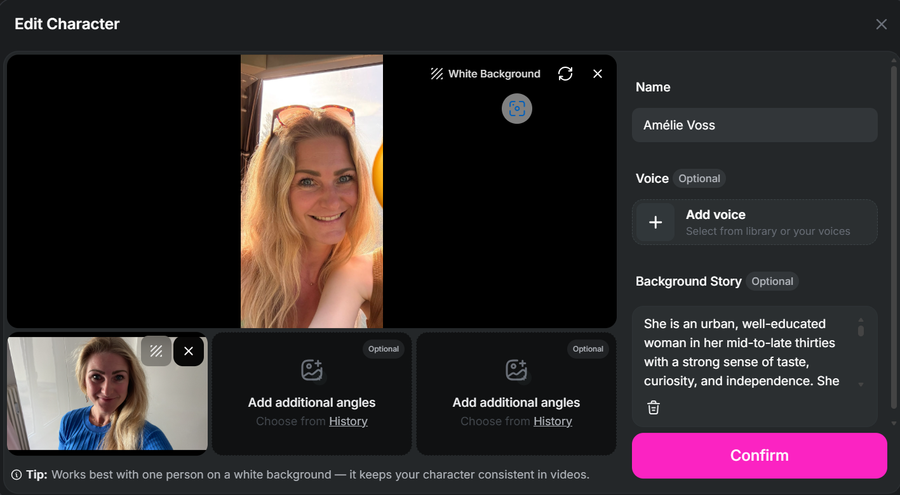

AI VIDEO — WORK SAMPLE 04 · FIRST DRAFT KI-VIDEO — ARBEITSPROBE 04 · ERSTER ENTWURF
From a character to a short AI video Vom Charakter zum kurzen KI-Video
A short wine story, made with OpenArt AI and ChatGPT. I worked my way in step by step: first a character, then a single image, then two mini scenes, and finally the full video in OpenArt's Creator Studio, in Director Project mode. It's an early first draft, and some mistakes are still visible. They're the most useful part. Eine kurze Wein-Geschichte, erstellt mit OpenArt AI und ChatGPT. Ich habe mich Schritt für Schritt herangetastet: erst ein Charakter, dann ein einzelnes Bild, dann zwei Mini-Szenen und schließlich das ganze Video im Creator Studio von OpenArt, im Director-Project-Modus. Es ist ein früher erster Entwurf, und einige Fehler sind noch sichtbar. Genau sie sind der lehrreichste Teil.
First draft, not a finished videoErster Entwurf, kein fertiges Video The video still has continuity errors: the wine changes colour, and a chair switches sides. My credits ran out before I could fix them. See "What I learned" below. Das Video hat noch Anschlussfehler: Der Wein wechselt die Farbe, und ein Stuhl wechselt die Seite. Meine Credits waren aufgebraucht, bevor ich sie korrigieren konnte. Siehe „Was ich gelernt habe“ weiter unten.
01 — THE VIDEO 01 — DAS VIDEO
The draft: a short wine story Der Entwurf: eine kurze Wein-Geschichte
83 seconds, from the vineyard to the glass. Made in OpenArt AI's Creator Studio, Director Project mode. First draft. 83 Sekunden, vom Weinberg bis ins Glas. Erstellt im Creator Studio von OpenArt AI, Director-Project-Modus. Erster Entwurf.
02 — HOW I WORKED MY WAY IN 02 — WIE ICH MICH HERANGETASTET HABE
Small steps first, then the full video Erst kleine Schritte, dann das ganze Video
CharacterCharakter
First, I created a character in OpenArt AI from reference photos and a background story, before any image or scene existed.Zuerst habe ich in OpenArt AI aus Referenzfotos und einer Hintergrundgeschichte einen Charakter angelegt, noch bevor es ein Bild oder eine Szene gab.
Single imageEinzelnes Bild
Then one still image of the character, made with Create Image.Dann ein einzelnes Standbild des Charakters, erstellt mit Create Image.
Two mini scenesZwei Mini-Szenen
Next, two short five-second scenes: a café and a wine tasting.Danach zwei kurze Szenen von fünf Sekunden: ein Café und eine Weinprobe.
Short videoKurzes Video
Finally, the full video in Creator Studio's Director Project mode, shot by shot.Zum Schluss das ganze Video im Director-Project-Modus des Creator Studios, Einstellung für Einstellung.
OpenArt features I used along the way: OpenArt-Funktionen, die ich dabei genutzt habe:

THE KEY LEARNING DAS WICHTIGSTE LEARNING
Good AI video starts with precise prompts.Gutes KI-Video beginnt mit präzisen Prompts.
Whatever I don't specify, the model decides, and it can decide differently from one shot to the next.Was ich nicht festlege, entscheidet das Modell, und zwar von Einstellung zu Einstellung womöglich anders.
03 — WHAT I LEARNED (FIRST DRAFT) 03 — WAS ICH GELERNT HABE (ERSTER ENTWURF)
Two continuity errors, and why they're still in Zwei Anschlussfehler, und warum sie noch drin sind
The wine changes colourDer Wein wechselt die Farbe
In the tasting part, the wine suddenly turns from red to white and back again. Lesson: details like this have to be stated clearly and consistently in every prompt.Im Probier-Teil wird aus dem Rotwein plötzlich Weißwein und wieder zurück. Learning: Solche Details müssen in jedem Prompt klar und einheitlich festgelegt werden.
She walks left, but the chair is on the rightSie geht nach links, der Stuhl steht aber rechts
The character moves to the left side, yet the chair she then sits on is suddenly on the right. Lesson: directions and the position of objects need to be described just as precisely as the people.Der Charakter bewegt sich nach links, der Stuhl, auf dem sie dann sitzt, steht aber plötzlich rechts. Learning: Richtungen und die Position von Gegenständen müssen genauso präzise beschrieben werden wie die Personen.
In Director mode, chatting costs credits tooIm Director-Modus kostet auch das Chatten Credits
In Director Project mode, credits are used not only for generating the video but already while chatting. That was the trap: by the time I wanted to fix the wine colour, my credits were used up. Lesson: prompt very concretely up front, so details like this carry through from start to finish.Im Director-Project-Modus werden Credits nicht nur für die eigentliche Video-Erstellung verbraucht, sondern schon beim Chatten. Das war die Falle: Als ich die Farbe des Weins korrigieren wollte, waren meine Credits aufgebraucht. Learning: Im Vorfeld sehr konkret prompten, damit sich solche Details von Anfang bis Ende durchziehen.
Curious what AI video could do for you? Neugierig, was KI-Video für dich leisten kann?
Let's talk about where it already works well, and where it still needs careful prompting and review. Lass uns darüber sprechen, wo es schon gut funktioniert und wo es noch sorgfältiges Prompting und Prüfung braucht.